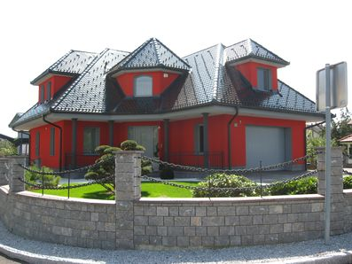
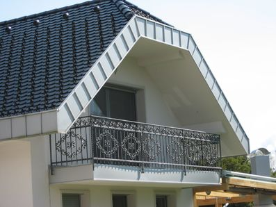
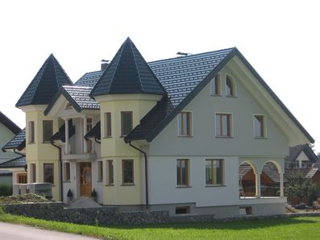
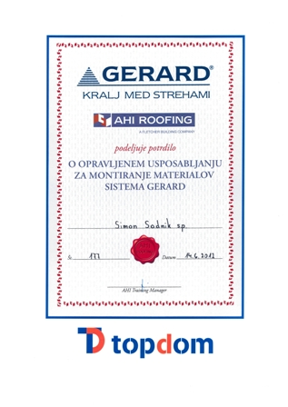
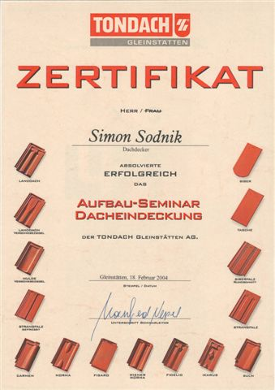

Reference
Vsi projekti
Krovstvo
Kleparstvo
Sanacije
Lesene konstrukcije

Projekt 1
Stavbno kleparstvo in krovstvo
Projekt 2
Stavbno kleparstvo in krovstvo

Projekt 3
Stavbno kleparstvo in krovstvo

Projekt 4
Stavbno kleparstvo in krovstvo
Projekt 5
Stavbno kleparstvo in krovstvo
Vsi projekti po kategorijah
Tondach kritina
Poslovno-stanovanjski objekt Kamnik
September 2010
Stanovanjski objekt Ljubljana
Julij 2010
Stanovanjski objekt Kranj
April 2010
Nadstrešek k objektu v Medvodah
Oktober 2009
Stanovanjski objekt Cerklje
September 2008
Stanovanjski objekt Medvode
Avgust 2008
Poslovno-stanovanjski objekt Zalog
Maj 2007
Sakralni objekt cerkev Zalog
September 1998
Bramac kritina
Gospodarsko poslopje Zalog
September 2010
Stanovanjski objekt Zalog
September 2009
Stanovanjski objekt Velesovo
September 2009
Večstanovanjski objekt Kranj
September 2004
Nadstrešek k objektu v Cerkljah
Maj 2004
Creaton kritina
Stanovanjski objekt Cerklje
September 2010
Stanovanjski objekt Ljubljana
Avgust 2010
Stanovanjski objekt Virmaše - Škofja Loka
April 2010
Poslovni objekt Kranjska Gora
September 2009
Stanovanjski objekt Vodice
Julij 2009
Stanovanjski objekt Medvode
Julij 2009
Objekt Grad Goričane
Julij 2009
Erlus kritina
Objekt cerkev Cerklje
Avgust 2008
Trimo kritina
Mehanična delavnica Citroen Mengeš
September 2010
Stanovanjski objekt Medvode
Julij 2007
Sanacije
Objekt Grad Goričane
Julij 2009
Sakralni objekt cerkev Lahovče
Junij 1997
Naši certifikati in dokazila

